Het eerste materiaal dat we gebruikt hebben om te experimenteren is gipsporselein. We wouden eerst proberen om de gipsmasker te vullen met een harder materiaal zoals beton, maar er werd ons gezegd dat we met beton niet het gewenste resultaat van de details zouden verkrijgen. Dit was echter wel onze intentie, om een materiaal te zoeken om te beginnen waar we de emoties duidelijk in beeld konden brengen. Nadat we de gipsmaskers gevuld hadden en ontvormd hadden konden we concluderen dat we het gewenste resultaat verkregen mbt de details van de uiteindelijke positieve vormen.
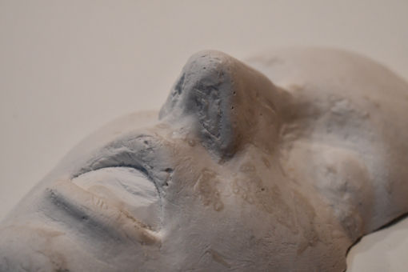
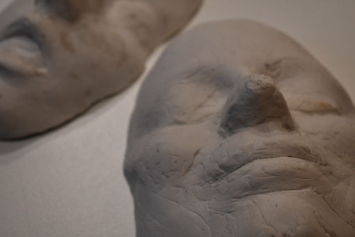
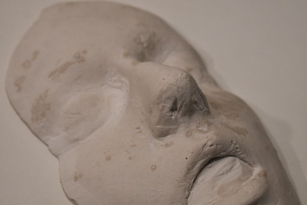
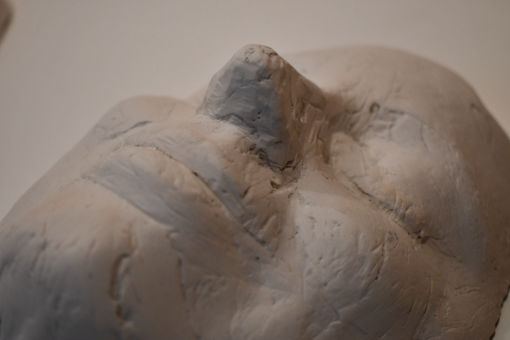
Chocolade
Tijdens onze experimenten met verschillenden materialen hebben we ook getracht een gipsmasker te vullen met chocolade. Dit hebben we gedaan in het begin van onze experimenten om te zien hoe en welke materialen goed zouden aanhechten aan de gipsmaskers. Bij chocolade konden we concluderen dat het de details van de gipsmaskers heel goed overnam maar bij het ontvormen moesten we zeer voorzichtig zijn omdat de chocolade zeer breekbaar was. Dit experiment heeft ons geholpen in het aanvoelen van de kwetsbaarheid van materialen.
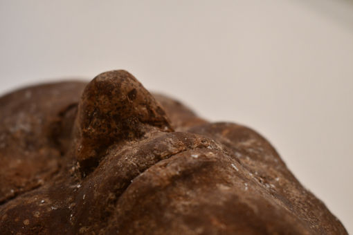
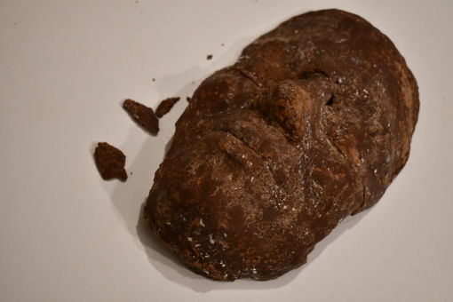
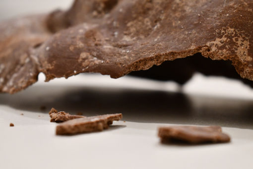
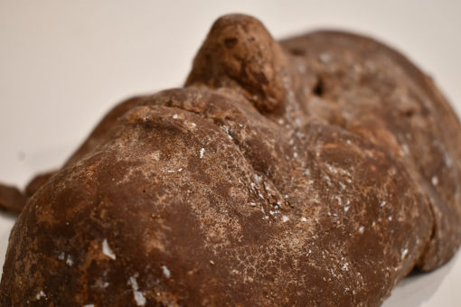
Textiel
Ook hebben we geprobeerd om de gipsmaskers te vullen met textiel en behangerslijm om te zien of een materiaal een bepaalde emotie kan ondersteunen of zelfs kan stimuleren. Als we de gipsmaskers ontvormden zagen we dat de gezichten nog vrij goed hun vorm bewaarden maar dat er door de plooien in het textiel toch een soort abstractie gecreëerd werd. We voelden dat door het gebruik van het textiel de emoties meer kracht bijgezet werd, wat uiteindelijk zeer belangrijk was voor het eindresultaat.
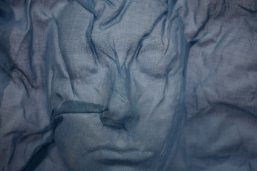
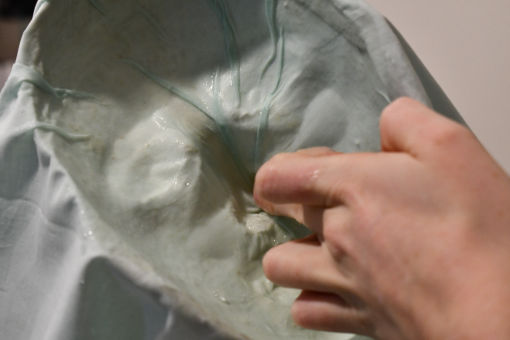
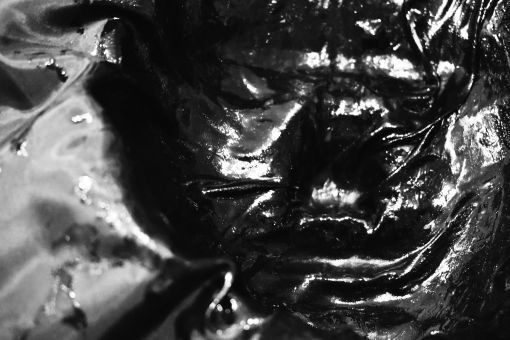
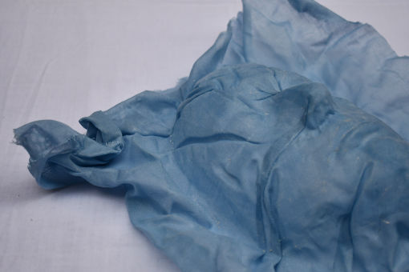
Na het experimenteren met deze verschillende materialen met elk hun eugen textuur, zijn we tot constatie gekomen dat textiel het best past in ons concept....Verschillende soorten textiel uittesten...